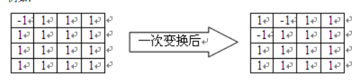

给定一个n*n的矩阵，矩阵中的每个数可能为1或-1。定义一种变换操作：矩阵中的每个数都变成变换前它上下左右
四个数字的乘积（如果某个数上下左右某个位置没有数字，那就取其他数字的乘积）。
例如：

如果一个矩阵经过这样的变换操作后，得到的矩阵和原来的矩阵完全相同，那么我们称这样的矩阵是“优美”的。
（相同指对应位置的数字都相等，不考虑旋转或翻转后的相同。）现在，毛明明在一个空的矩阵中先选了若干个位
置填上了数字，现在他想知道，如果把其他的位置都继续填满，最后得到的矩阵有多少种是“优美”的。